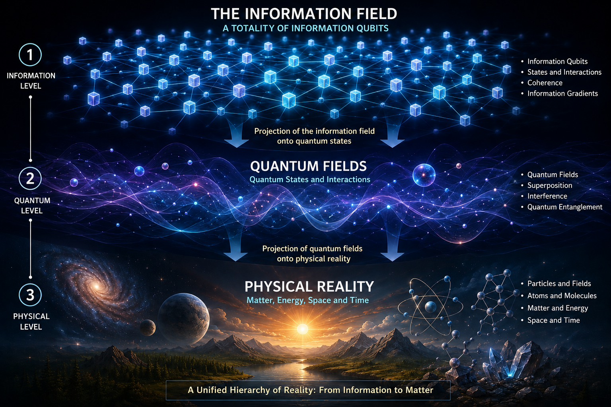

Core Ideas



The Informational Field
Why the informational field is a primary informational structure?
Coherence and binding energy.
Why is coherence the basis of physical binding energy?
The Quick Reference Guide to Key Concepts of the Information Model
Connections to Quantum Mechanics
About the Book
This book brings together the philosophy of consciousness, the informational approach, and modern quantum mechanics within a unified informational model of reality.